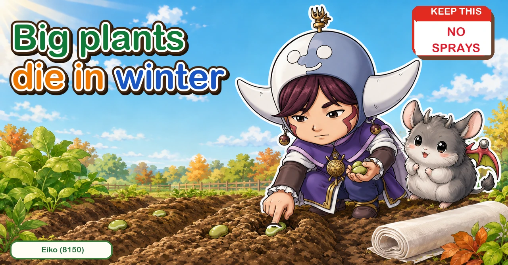
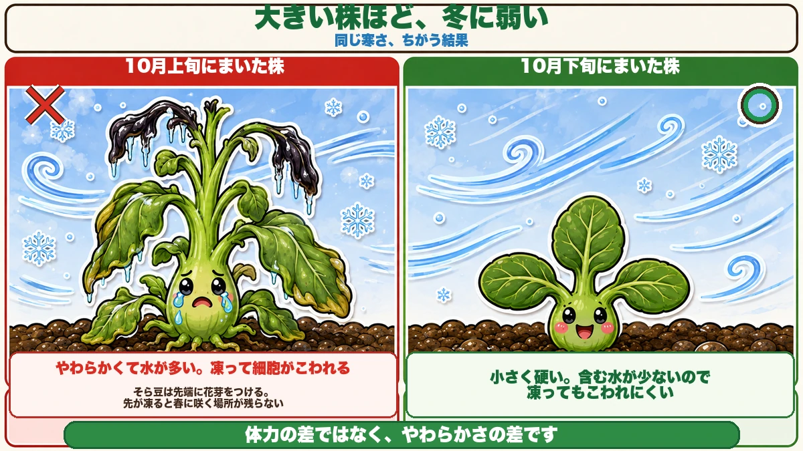
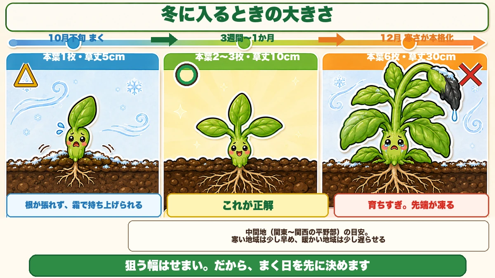
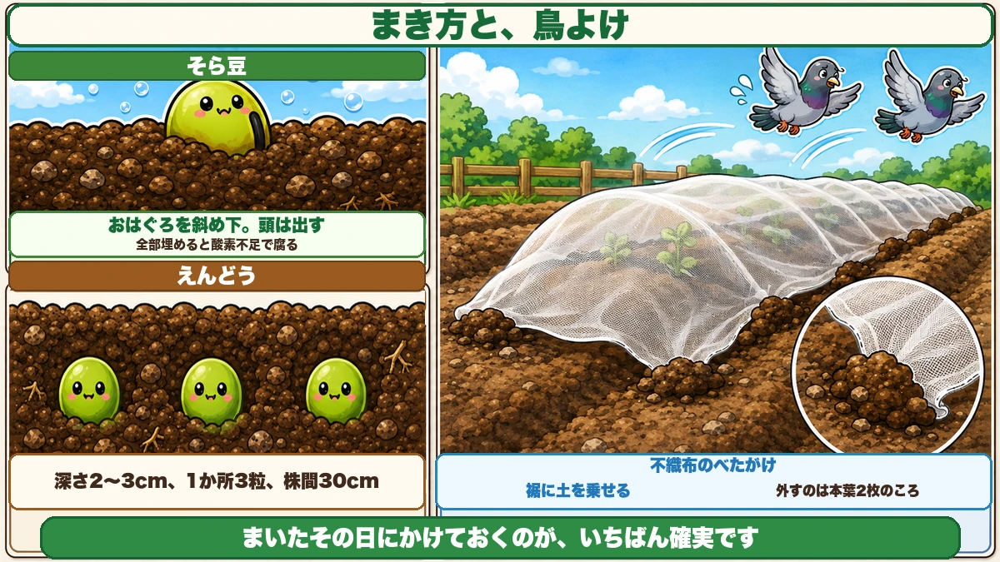

Grow them big and winter kills them Sowing late on purpose

"The broad beans I sowed last year all died over winter."
"I assumed sowing early and getting them bigger was better."
"Birds dug up everything I sowed."
Hello, I'm Eiko. Eight years of growing vegetables organically and without pesticides, and a teaching licence in science.
Today, sowing peas and broad beans for an overwintered crop.
The point, up front:
Grow them big and winter kills them.
"Surely it's the other way round?" I thought so too — a bigger plant feels like it has more in reserve.
It isn't. Small plants overwinter better. Which is why autumn sowing is deliberately held back ☺️
Why big plants die

What this diagram says （図解の文字）
- The bigger the plant, the weaker in winter — same cold, different result
- × sown early — soft and full of water; it freezes and the cells are destroyed
- Broad beans set flower buds at the tip. A frozen tip leaves nowhere to flower in spring
- ○ sown late — small and hard, holding little water, so freezing does less damage
It's about softness
A well-grown plant has soft stems and leaves full of water.
And water that freezes expands and destroys the cells — the same reason a frozen bottle bulges.
A small plant has harder tissue holding less water, so freezing does less harm.
And the tip is the weakest part
The growing tip is the newest and softest part of the plant.
Broad beans set their flower buds at the tip. Grow too far in autumn and the flower buds freeze and drop with it. Come spring, there is nowhere left to flower.
So an over-grown plant can survive and still set nothing. That's the most wasteful outcome of all.
Aim for two or three true leaves

What this diagram says （図解の文字）
- The size to enter winter at
- Sow → three to four weeks → the cold sets in
- △ one true leaf, 5 cm — not enough root; frost lifts it
- ○ two to three true leaves, 10 cm — this is right
- × six true leaves, 30 cm — overgrown; the tip freezes
One thing to remember: two or three true leaves, about 10 cm tall, when the cold sets in.
Smaller than that and the roots aren't established, so frost heave lifts it. Bigger and it freezes. Miss either way and you fail — the target is narrow.
So you work backwards
Three to four weeks from sowing to two or three true leaves.
So count back three to four weeks from when hard cold usually arrives where you are, and sow then. Put a circle on the calendar; that's about the level of precision required.
Sowing depth decides it

What this diagram says （図解の文字）
- How to sow, and keeping birds off
- Broad bean — the dark scar angled downward, the top left showing — fully buried, it suffocates and rots
- Pea — 2–3 cm deep, three seeds per station, 30 cm apart
- Fleece laid straight over, with soil on the edges ／ remove it at two true leaves
- Laying it the same day you sow is the surest approach
Broad beans: scar down, top showing
A broad bean seed has a dark line — the scar where the root emerges.
So angle the scar downward and push the seed in until just the top is still visible. Don't bury it completely.
Buried deep, it runs short of oxygen and rots. A broad bean is a big seed, and taking up too much water damages it.
Peas: 2–3 cm deep
Peas can be buried normally. 2–3 cm deep, three seeds per station, stations 30 cm apart.
Three because some won't germinate. If all three come up, thin to one or two.
Water once and stop
For both: water well once after sowing, then leave them.
Soil kept wet rots the seed. Beans germinate better on the dry side.
The commonest failure is birds
Sown beans get dug up — a very familiar story. Pigeons and crows know exactly what is buried where.
And the moment the seed leaves open is dangerous too: bean seed leaves are thick and nutritious, and they get eaten specifically.
One sheet of fleece
Lay fleece straight over as soon as you've sown, with soil along the edges.
That's effectively the end of the problem. It also keeps the soil warmer, so germination is more even.
Take it off at two true leaves. After that nothing bothers them — birds aren't interested in hardened leaves.
They barely need feeding
The most interesting thing about legumes: root-nodule bacteria live in their roots, and those bacteria convert nitrogen from the air into a form the plant can use.
A bean makes its own nitrogen.
So adding more backfires
Add nitrogen to a plant that already makes its own and you get leaf and no flowers — the all-vine state again.
A light dressing of compost across the bed is plenty. Concentrated nitrogen feeds are better left out entirely.
And leave the roots in
When the crop finishes, cut the plant off at the base with scissors and leave the roots in the soil.
The nitrogen the bacteria made becomes fertiliser for the next crop. Pull the plant and you throw it away.
The science: why the plant works with a bacterium 🔬
About 78% of air is nitrogen — it is everywhere, in unlimited supply.
And plants cannot use it. Nitrogen in the air is two atoms bound together so tightly that separating them takes an enormous amount of energy.
Root-nodule bacteria are among the very few organisms that can.
So the bean builds rooms in its roots, houses the bacteria, and supplies them with sugars. The bacteria hand back nitrogen. Neither is better off without the other.
To sum up
- ✅ Bigger plants die in winter — soft, and full of water
- ✅ Target: two or three true leaves, about 10 cm, when the cold arrives
- ✅ Work back three to four weeks from that and sow then
- ✅ Broad beans: scar angled down, top showing, not fully buried
- ✅ Peas: 2–3 cm deep, three per station, 30 cm apart
- ✅ Water once after sowing, then stop — wet soil rots the seed
- ✅ Fleece on the day you sow stops the birds
- ✅ Take the fleece off at two true leaves
- ✅ Don't feed — legumes fix their own nitrogen
- ✅ Cut the plant off and leave the roots for the next crop
You don't have to do all of it. Put one circle on the calendar three to four weeks before your cold weather starts. The autumn beans are decided by that one day
Thank you for reading!